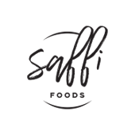
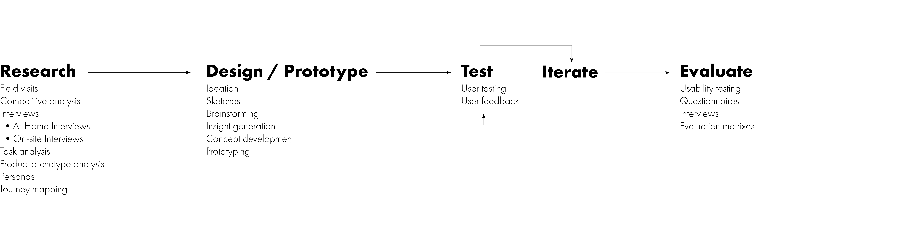

Overview
Problem
Transporting bulk olive oil from the grocery to the pantry can be a messy endeavor. Most people who do it have a solution they’ve developed for themselves. However, many people would like to benefit from the lower cost, higher quality and sustainability of purchasing bulk olive oil (as well as other liquid products).
Solution
We developed a product system that makes dispensing and transporting bulk olive oil from grocery to kitchen.
Goals
Create an easier, more delightful experience for people to transport bulk olive oil from the grocery to the kitchen. Have two modes for the container: Travel and Display
My Role
UX Designer, Prototyping
Client
Timeline
August. 2018 - Nov. 2018
Team Members
Chris Swan | Sahana Mahadevan | Jeshwanth Srinivasan
Tools
Adobe Illustrator, Adobe InDesign, Rhino3D, Physical Prototyping
Our Approach
My Contribution
I planned and conducted field visits with the client and other team memebers. I collaborated with the team to plan and conduct user interviews; some were at home, others were on-site and all were either semi-structured or unstructured
in the initial phase. I built physical prototypes and helped migrate those to Rhino3D for modeling. I collaborated with the other members to produce final 3D prints. I also planned and executed usability testing with our prototypes
at several levels of the process and conducted more structured interviews during the evaluation phase of development.
Throughout the project I collaborated with our team on concept development and product direction. During interviews and field visits, I kept detailed notes and audio recordings of our research process. I maintained photographic
documentation of fieldwork and our prototyping process throughout all levels of the project.